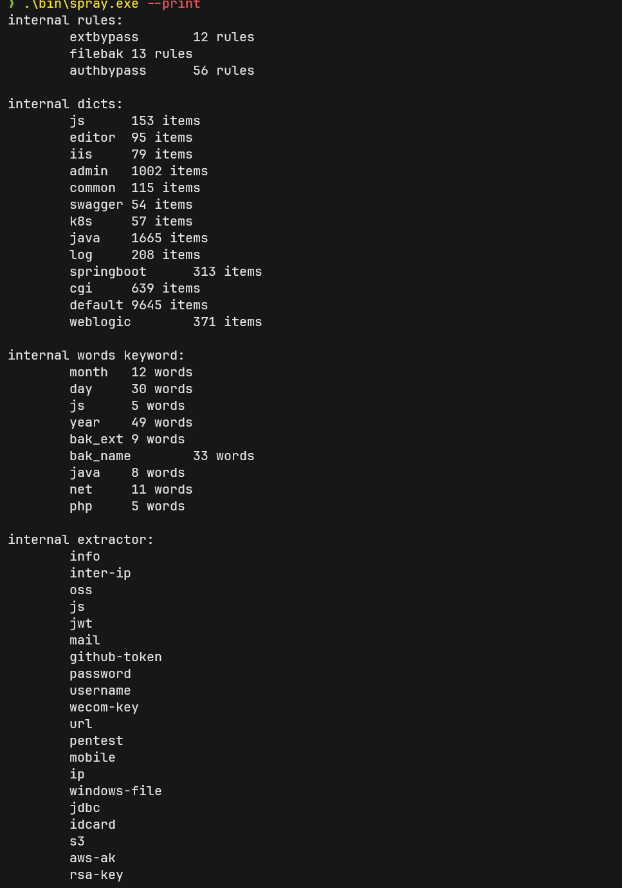
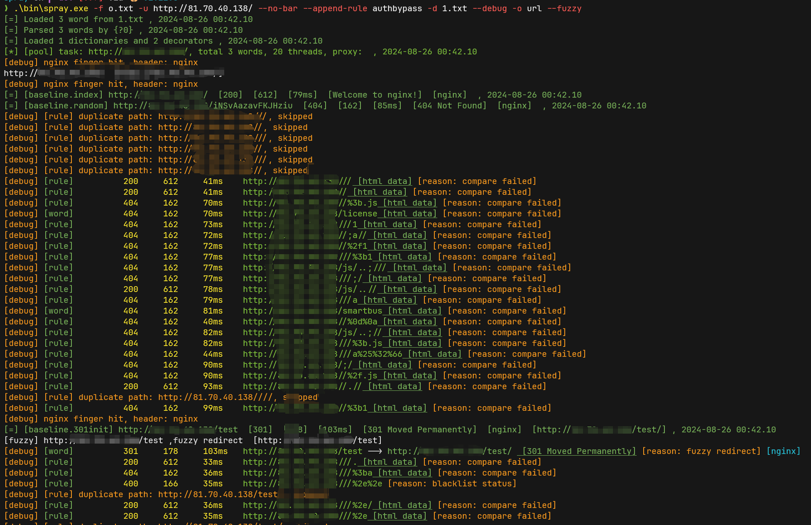

入门
Feature¶
Features.
- 超强的性能, 在本地测试极限性能的场景下, 能超过 ffuf 与 feroxbruster 的性能 50%以上.
- 基于掩码的字典生成
- 基于规则的字典生成
- 动态智能过滤
- 全量 gogo 的指纹识别
- 自定义信息提取, 如 ip,js, title, hash 以及自定义的正则表达式
- 自定义无效页面过滤策略
- 自定义输出格式 * _nix 的命令行设计, 轻松与其他工具联动
- 多角度的自动被 ban,被 waf 判断
- 断点续传
- 通用文件, 备份文件, 单个文件备份, 爬虫, 主动指纹识别的完美结合
Usage¶
spray -h
完整的参数说明
Usage:
./spray
Input Options:
--resume= File, resume filename
-c, --config= File, config filename
-u, --url= Strings, input baseurl, e.g.: http://google.com
-l, --list= File, input filename
-p, --port= String, input port range, e.g.: 80,8080-8090,db
-i, --cidr= String, input cidr, e.g.: 1.1.1.1/24
--raw= File, input raw request filename
-d, --dict= Files, Multi,dict files, e.g.: -d 1.txt -d 2.txt
-D, --default Bool, use default dictionary
-w, --word= String, word generate dsl, e.g.: -w test{?ld#4}
-r, --rules= Files, rule files, e.g.: -r rule1.txt -r rule2.txt
--append-rule= Files, when found valid path , use append rule generator new word with current path
--filter-rule= String, filter rule, e.g.: --rule-filter '>8 <4'
--append= Files, when found valid path , use append file new word with current path
--offset= Int, wordlist offset
--limit= Int, wordlist limit, start with offset. e.g.: --offset 1000 --limit 100
Function Options:
-e, --extension= String, add extensions (separated by commas), e.g.: -e jsp,jspx
--force-extension Bool, force add extensions
--exclude-extension= String, exclude extensions (separated by commas), e.g.: --exclude-extension jsp,jspx
--remove-extension= String, remove extensions (separated by commas), e.g.: --remove-extension jsp,jspx
-U, --uppercase Bool, upper wordlist, e.g.: --uppercase
-L, --lowercase Bool, lower wordlist, e.g.: --lowercase
--prefix= Strings, add prefix, e.g.: --prefix aaa --prefix bbb
--suffix= Strings, add suffix, e.g.: --suffix aaa --suffix bbb
--replace= Strings, replace string, e.g.: --replace aaa:bbb --replace ccc:ddd
--skip= String, skip word when generate. rule, e.g.: --skip aaa
Output Options:
--match= String, custom match function, e.g.: --match 'current.Status != 200''
--filter= String, custom filter function, e.g.: --filter 'current.Body contains "hello"'
--fuzzy String, open fuzzy output
-f, --file= String, output filename
--dump-file= String, dump all request, and write to filename
--dump Bool, dump all request
--auto-file Bool, auto generator output and fuzzy filename
-F, --format= String, output format, e.g.: --format 1.json
-j, --json Bool, output json
-O, --file-output String, file output format, json/csv
-o, --probe= String, output format
-q, --quiet Bool, Quiet
--no-color Bool, no color
--no-bar Bool, No progress bar
--no-stat Bool, No stat file output
Plugin Options:
-a, --advance Bool, enable all plugin
--extract= Strings, extract response, e.g.: --extract js --extract ip --extract version:(.*?)
--extract-config= String, extract config filename
--active Bool, enable active finger path
--recon Bool, enable recon
--bak Bool, enable bak found
--common Bool, enable common file found
--crawl Bool, enable crawl
--crawl-depth= Int, crawl depth (default: 3)
Finger Options:
--finger Bool, enable active finger detect
--update Bool, update finger database
--finger-path= String, 3rd finger config path (default: fingers)
--finger-engine= String, custom finger engine, e.g. --finger-engine ehole,goby (default: all)
Request Options:
-x, --method= String, request method, e.g.: --method POST (default: GET)
--header= Strings, custom headers, e.g.: --headers 'Auth: example_auth'
--user-agent= String, custom user-agent, e.g.: --user-agent Custom
--random-agent Bool, use random with default user-agent
--cookie= Strings, custom cookie
--read-all Bool, read all response body
--max-length= Int, max response body length (kb), -1 read-all, 0 not read body, default 100k, e.g. --max-length 1000 (default: 100)
Modify Options:
--rate-limit= Int, request rate limit (rate/s), e.g.: --rate-limit 100 (default: 0)
--force Bool, skip error break
--no-scope Bool, no scope
--scope= String, custom scope, e.g.: --scope *.example.com
--recursive= String,custom recursive rule, e.g.: --recursive current.IsDir() (default: current.IsDir())
--depth= Int, recursive depth (default: 0)
--index= String, custom index path (default: /)
--random= String, custom random path
--check-period= Int, check period when request (default: 200)
--error-period= Int, check period when error (default: 10)
--error-threshold= Int, break when the error exceeds the threshold (default: 20)
--black-status= Strings (comma split),custom black status (default: 400,410)
--white-status= Strings (comma split), custom white status (default: 200)
--fuzzy-status= Strings (comma split), custom fuzzy status (default: 500,501,502,503,301,302)
--unique-status= Strings (comma split), custom unique status (default: 403,200,404)
--unique Bool, unique response
--retry= Int, retry count (default: 0)
--sim-distance=
Miscellaneous Options:
-m, --mod=[path|host] String, path/host spray (default: path)
-C, --client=[fast|standard|auto] String, Client type (default: auto)
--deadline= Int, deadline (seconds) (default: 999999)
-T, --timeout= Int, timeout with request (seconds) (default: 5)
-P, --pool= Int, Pool size (default: 5)
-t, --thread= Int, number of threads per pool (default: 20)
--debug Bool, output debug info
--version Bool, show version
-v Bool, log verbose level ,default 0, level1: -v level2 -vv
--proxy= String, proxy address, e.g.: --proxy socks5://127.0.0.1:1080
--init Bool, init config file
--print Bool, print preset all preset config
Help Options:
-h, --help Show this help message
QuickStart¶
当前有两种运行模式, 爆破模式和基本模式. 这两种模式会自动切换, 不需要用户手动指定。
所有需要基线进行智能过滤的功能都会打开爆破模式, 不需要上下文的功能会使用基本信息收集模式
基本信息探测¶
指定url进行探测
spray -u http://example.com -u http://test.com
通过文件批量指定url
spray -l 1.txt
最大能力的信息收集, 打开全部指纹引擎, 打开全部配置的extractor
spray -l 1.txt --finger --recon
端口扫描与网段扫描
可以实现类似gogo的配置, 但是是只能用来识别http协议
spray -i 1.1.1.1/24 -p top2
域名+端口的探测
spray -u example.com -p top2
爆破模式¶
注意
基本信息探测中的用法都可以在爆破模式中使用, 但请注意爆破模式会消耗更多的资源
基本使用, 从字典中读取目录进行爆破
spray -u http://example.com -d wordlist1.txt -d wordlist2.txt
通过掩码生成字典进行爆破
spray -u http://example.com -w "/aaa/bbb{?l#4}/ccc"
通过规则生成字典爆破. 规则文件格式参考 hashcat 的字典生成规则
spray -u http://example.com -r rule.txt -d 1.txt
批量爆破
spray -l url.txt -r rule.txt -d 1.txt
断点续传
spray --resume stat.json
host爆破
spray -m host -u http://123.123.123.123 -w "{?0}.example.com" -d 1.txt
1.txt:
aaa
bbb
ccc
...
字典生成¶
内置字典¶
在v1.1.0中, spray新加入了内置字典相关功能.
内置字典的配置位于 https://github.com/chainreactors/templates/tree/master/spray/dict
(原先的common已经从common.yaml中迁移到dict中)
可以使用--print看到当前所有当前内置的配置.

注意内置字典名字
使用内置字典时, 不可以带后缀名用来与用户自定义字典区分. 例如dict目录下配置为js.txt, 在使用时请使用-d js
可以同时使用多个内置字典与外部字典组合例如:
spray -u http://example.txt -d js -d k8s -d custom.txt
基于掩码的字典生成¶
为了实现这个功能, 编写了一门名为 mask 的模板语言. 代码位于: mask.
简单使用:
spray -u http://example.com -w '/{?l#3}/{?ud#3}
含义为, /全部三位小写字母/全部三位大写字母+数字组成的字典.
语法基本介绍¶
所有的 mask 生成器都需要通过{}包裹, 并且括号内的第一个字符必须为?, $其中之一.
#后的数字表示重复次数, 可留空, 例如{?lu} , 表示"全部小写字母+全部大写字母"组成的字典.
?表示普通的笛卡尔积. 例如{?l#3}表示生成三位小写字母的所有可能组合$表示贪婪模式, 例如{$l#3}表示 3 位小写字母的所有可能组合+2 位小写字母的所有可能组合+1 位小写字母的所有可能组合
掩码的定义参考了 hashcat, 但是并不完全相同. 目前可用的关键字如下表:
"l": Lowercase, // 26个小写字母
"u": Uppercase, // 26个大写字母
"w": Letter, // 52大写+小写字母
"d": Digit, // 数字0-9
"h": LowercaseHex, // 小写hex字符, 0-9 + a-f
"H": UppercaseHex, // 大写hex字符, 0-9 + A-F
"x": Hex, // 大写+小写hex字符, 0-9 + a-f + A-F
"p": Punctuation, // 特殊字符 !\"#$%&'()*+,-./:;<=>?@[\\]^_`{|}~
"P": Printable, // 可见的ascii字符
"s": Whitespace, // 空字符 \t\n\r\x0b\x0c
支持通过数字表示命令行输入的字典序号, 例如
spray -u http://example.com -w '/{?0u#2}/{?01}' -d word0.txt -d word1.txt
这里配置了两个掩码生成器
- 第一个:
{?0u#2}表示 word0.txt 的所有内容+所有大写字母笛卡尔积两次 - 第二个:
{?01}表示 word0.txt + word1.txt 的所有内容.
可以配置任意多个掩码生成器, 不同掩码生成器之间会进行笛卡尔积, 所以请注意字典大小.
-d与基于掩码的生成器交互作用
在使用-d 指定字典(不管是内置字典还是自定义字典) 都会将这个字典注册到掩码的数字中. 就像上文中出现的{?01}, 会按次序解析为word0.txt + word1.txt
关于mask更多高级功能请见: https://chainreactors.github.io/wiki/libs/words/#20240521-updatec
基于规则的字典生成¶
words 生成器的详细使用参见words 文档
当前内置的 spray 规则如下:
简单使用
spray -u http://example.com -d word.txt -r rule.txt
这行命令表示, 将word.txt中每一行都作为基础值与规则库rule.txt进行 rule 模板语言处理过后的笛卡尔积. 最终的字典总数量为 word行数 * rule行数.
rule过滤器
spray -u http://example.com -d word.txt --rule-filter ">15"
这行命令表示, 指定字典, 并过滤掉长度大于 15 的字典.
预配置的便捷用法¶
在使用基于掩码或基于规则的字段生成器时, 需要大量的手动配置和测试. 这很麻烦, 所以spray提供了一些预设快速实现一些常用配置.
所有的预设实际上都是通过预先配置的words 实现.
通过words的掩码配置实现的:
--suffix在字典后面添加后缀, 可添加多个, 与原有的字典组成笛卡尔积--prefix在字典前面添加前缀, 可添加多个, 与原有的字典组成笛卡尔积-e/--extension添加拓展名, 逗号分割
通过words的function实现的:
-L/--lowercase将字典中的所有字母转换为小写-U/--uppercase将字典中的所有字母转换为大写--replace替换字典中的字符, 例如--replace aaa=bbb将字典中的 a 替换为 b, 可以添加多个--replace--remove-extension删除字典中的文件扩展名, 逗号分割--exclude-extension排除字典中的文件扩展名, 逗号分割--skip跳过存在指定关键字的字典force-extension强制添加后缀名, 不论是否已经存在
字典生成器的优先级
flowchart TD
A(将 `-w` 与 `-d` 解析成 words 表达式) --> B(基于掩码的函数装饰器)
B --> C(基于掩码的字典生成器)
C --> D(基于规则的字典生成器)
D --> E(基于规则的过滤器)
E --> F(words装饰器)
F --> G(送入到 channel 中)Input¶
支持三种不同类型的输入:
-u/--url, 从命令行中添加 url 作为任务.-l/--list, 从文件中选择多个 url 作为任务. 将会自动开启并发模式, 支持多个任务同时进行, 并每个任务都有自己的 keep-alive 的连接池-c/--cidr输入指定网段, 例如spray -c 1.1.1.1/24-p/--port指定多个端口, 规则与 gogo 一致, 例如spray -u http://example -p top2--default启用默认字典, 字典来自 dirsearch--resume, 选择 stat 文件断点续传
并且还有一些参数可以控制任务.
--offset, 字典偏移--limit, 限制的字典数量--deadline所有任务的最大时间限制, 超时了会保存当前进度的 stat 文件后退出--force忽略掉被 ban 或被 waf 的判断, 强制跑完所有字典
速率限制¶
合理的速率配置能让 spray 的性能大大提升.
- 通过
-p/--pool配置并行的任务数, 每个 url 都会分配到一个独立的 pool. - 通过
-t/--thread每个 pool 的并发数, 需要注意的是, thread 与每秒实际发包速率无关 - 通过
--rate-limit配置每个 pool 的每秒发包上限速度. - 通过
--timeout配置每个请求的超时时间, 如果目标的 waf 会通过 drop packet 的方式响应, 适当调低 timeout 可以加快爆破速度.
爆破方式¶
通过-m 指定爆破方式, 默认为 path, 当前支持path, host两种模式
path
path 模式, 字典将会拼接到输入的 url 之后
host
host 模式, 字典将会替换 header 中的 host 字段
client¶
当前 spray 采用了 net/http 与 fasthttp 作为备选的 client, 后续还将兼容支持 http2/http3 的 client.
因为 fasthttp 指定 host 时会进行一次 dns 解析, 导致出现报错, 因此, 在 path 爆破时将使用 fasthttp. 在 host 爆破时将使用 net/http.
fasthttp 的性能远高于 net/http, 因此不建议手动修改配置. 如果有相关的特殊需求, 可以通过-c/--client auto/standard/fast进行修改. 默认为 auto.
使用 fasthttp 需要注意
如果目标使用了chunked, 那么 fasthttp 很可能无法正确获取解码后的 body, 需要使用-c standard切换成 go 自带的net/http . 我原本以为能找到一个 header 去在 client 关闭 chunk, 似乎并没有对应的方法.
请求自定义¶
--header "HEADER: aaa" 可添加自定义的 header 头, 可添加多个--header来添加多个 header
--cookie "Session: sess" 可添加自定义的 cookie, 可添加多个--cookie来添加多个 cookie
--user-agent "Spray0.1.0" 可添加指定的 UA
--random-agent 打开自动随机 UA 替换
--raw file 类似 sqlmap 的-r参数 , 选择纯文本的请求模板, 后续的请求都会使用这个模板构造, todo
Output¶
spray 默认输出到终端的格式是 human-like 文本. 并默认开启的 title 获取 与 被动指纹识别 功能.
命令行输出案例
spray --no-bar -u http:/example.com -w '/{?l}' -a --extract url
[*] Parsed 26 words by /{?l} , 2023-01-04 11:16.30
[*] Loaded 1 urls from cmd , 2023-01-04 11:16.30
[*] Loaded 0 dictionaries and 0 decorators , 2023-01-04 11:16.30
[+] [baseline.index] http:/example.com/ - 200 - 6326 - 70ms [解决方案，一查就有] [nginx] , 2023-01-04 11:16.30
[+] [baseline.random] http:/example.com/PgtrqWohCJJLckw - 404 - 169 - 30ms [404 Not Found] [nginx] , 2023-01-04 11:16.30
[+] http:/example.com/static/js/chunk-libs.89fc8520.js - 200 - 0 - 116ms [nginx]
[+] http:/example.com/static/js/chunk-elementUI.80b6d1d0.js - 200 - 0 - 153ms [nginx]
[+] http:/example.com/static/js/app.72fc17fc.js - 200 - 68582 - 170ms [nginx] [ url:17 items ][ crawl:109 items ]
url:
http://www.w3.org/2000/svg
https://github.com/PanJiaChen/vue-admin-template/
https://panjiachen.github.io/vue-element-admin-site/#/
crawl:
https://github.com/PanJiaChen/vue-admin-template/
https://panjiachen.github.io/vue-element-admin-site/#/
https://beian.miit.gov.cn
/uploadFile/uploadFile
/userInfo/userInfo
/userAccount/userAccount
/userDocument/userDocument
/userMake/userMake
/userVip/userVip
/userInvite/userInvite
/userCollection/userCollection
/demand-form/demand-form
/login
/dashboard
/login?redirect=
/home
/userMake
/pay
/pay/success
/paySuccess
/pay/success
/PaySuccess
/wxLogin
/404
/prod-api/api
[+] http:/example.com/prod-api/api - 404 - 124 - 35ms [{\"timestamp\":] [focus:springboot] [nginx] [ crawl:/api ]
crawl:
/api
[*] [stat] http:/example.com took 0 s, request total: 125, finish: 26/26, found: 4, check: 0, failed: 0 , 2023-01-04 11:16.30
[*] [stat] http:/example.com 404: 120, 200: 3, , 2023-01-04 11:16.30
默认将会输出进度条, 但是进度条在 windows 的各种 terminal 下会有些输出 bug. 可以通过--no-bar单独关闭进度条.
默认的命令行输出是带颜色的, 可以通过--no-color 关闭着色.
如果需要将 spray 的结果传递给其他工具, 需要关闭各种日志输出, 着色, 进度条等无用输出. 可以添加-q/--quiet关闭非必要输出.
如果需要查看所有细节, 可以添加--debug. 不论结果是否有效, 输出每个响应的细节
输出流¶
除了默认配置下最直观的命令行输出, spray 支持一个自由的输出流配置.
-f/--file默认输出流, 指定有效结果的输出文件--dump-file全部请求的输出流, 指定每个发出的包与响应结果的输出文件
默认情况下, 被智能过滤中的模糊过滤掉的输出不会输出到命令行或者文件. 但模糊过滤的结果存在漏报/误报的可能, 因此很多时候还需要进行二次处理.
一些便捷化的参数:
--fuzzy打开命令行的模糊过滤结果输出.--auto-file自动根据任务指定文件名--dump自动指定 dump 文件的文件名--no-stat将不会自动创建.stat文件-j/--json标准输出中的输出格式启用json格式
Probe¶
默认的 baseline 中还有许多数据默认状态下不会输出, 可以通过--probe参数去自定义想要输出的内容.
当前支持的 probe 有
urlhosttitleredirectmd5, body 的 MD5simhash, body 的 simhashmmh3, body 的 mmh3stat/status, 状态码spend, 耗费的时间, 单位毫秒extract提取的结果frame指纹, 默认开启被动指纹识别,cpe,cpe:2.3:a:microsoft:windows_10:1909:*:*:*:*:*:*:*****wfn,wfn:[part="a", vendor="microsoft", product="windows_10", version="1909"]uri,cpe:/a:microsoft:windows_10:1909
通过spray -o url,host,title,md5,frame 即可自由组合 probe 控制输出内容
输出到文件¶
使用-f 指定输出文件名
使用-O json (默认)或-O csv 指定文件输出格式.
默认输出到文件的格式为 json
json 输出格式案例
{
"number": 0,
"url": "http://example/static/js/app.72fc17fc.js",
"path": "//static/js/app.72fc17fc.js",
"host": "",
"body_length": 68582,
"header_length": 255,
"status": 200,
"spend": 405,
"title": "",
"frameworks": [
{
"name": "nginx",
"tags": [
"other"
]
}
],
"extracts": [
{
"name": "url",
"extract_result": [
"http://www.w3.org/2000/svg",
"https://github.com/PanJiaChen/vue-admin-template/",
"http://www.w3.org/2000/svg",
"https://beian.miit.gov.cn",
]
},
{
"name": "crawl",
"extract_result": [
"https://github.com/PanJiaChen/vue-admin-template/",
"https://panjiachen.github.io/vue-element-admin-site/#/",
"https://beian.miit.gov.cn",
"/uploadFile/uploadFile",
"/userInfo/userInfo",
"/userAccount/userAccount",
"/userDocument/userDocument",
"/userMake/userMake",
"/userVip/userVip",
"/userInvite/userInvite",
"/userCollection/userCollection",
"/demand-form/demand-form",
"/login",
]
}
],
"error": "",
"reason": "",
"valid": true,
"fuzzy": false,
"source": 5,
"depth": 1,
"hashes": {
"body-md5": "d7190390f194cd8a09cbdf132ee0bb6e",
"header-md5": "19bf7ec8a759066bdf8bbc1a90804244",
"raw-md5": "8c00b45ac0c33c51074270a47620318d",
"body-simhash": "af63bd4c8601b7ae",
"header-simhash": "9833941ee6ab8d6d",
"raw-simhash": "af63bd4c8601b7ae",
"body-mmh3": "2409784245"
}
}
除了-f 指定的文件名外, 还会根据任务类型生成***.stat的进度文件, 用来保存任务的状态与进度信息. 可以通过这个文件判断目标大致的状况.
stat 输出案例
{
"url": "http://101.132.126.181/",
"counts": {
"200": 3,
"404": 104
},
"failed": 0,
"req_total": 109,
"check": 0,
"found": 4,
"filtered": 0,
"fuzzy": 0,
"wafed": 0,
"end": 26,
"offset": 0,
"total": 26,
"start_time": 1672802906,
"end_time": 1672802907,
"word_count": 26,
"word": "/{?l}",
"dictionaries": null,
"rule_files": null,
"rule_filter": ""
}
spray 区分了不同类型的输出, 只有通过所有过滤器的结果才会输出到-f指定的文件中.
extract/提取器¶
spray 有一个类似 gogo 的 extract 的功能. 用来从网页中提取特定数据.
可以通过--extract regexp, 自定义正则表达式去提取数据. --extract 可以添加多个.
extract 也存在一些常用的预设, --extract ip
- url
- ip
- idcard
- phone
- header
- body
- cookie
- response
Config¶
spray的在高级用法下配置较为复杂, 现在提供了config文件可以将一些常用参数固定下来.
spray执行时会自动寻找当前目录下的config.yaml文件, 如果不存在则不会启用
生成初始配置, 默认位于当前目录下
spray --init
手动执行config文件
spray -c custom.yaml
拓展插件¶
启用全部插件
-a/ advance 将同时上述开启所有功能, 并且功能之间还会交叉组合出一些惊喜.
finger¶
check/brute通用
--finger 打开全部的指纹引擎
打开则调用 https://github.com/chainreactors/fingers 的全量指纹库进行识别, 不打开则默认只调用fingers原生指纹库
recon¶
check/brute通用
--recon 打开敏感信息提取
提取规则库位于: https://github.com/chainreactors/templates/blob/master/extract.yaml
包含了优化后的jsfinder引擎, 配合目录爆破和crawl, 可以达到意想不到的效果
crawl¶
仅brute可用
crawl 是基于linkfinder正则的大量优化后的插件, 比原生的linkfinder强数倍, 并且能递归作用.
如果你正在使用linkfinder, 强烈推荐使用crawl代替linkfinder.
--crawl可以开启爬虫. 限定爬虫的深度为 3, 且只能作用于当前作用域, 需要更加自由配置的爬虫配置请使用那几个 headless 爬虫. 默认情况下爬虫只爬取自身作用域--scope *.example.com将允许爬虫爬到指定作用域--no-scope取消所有作用域限制--read-all默认情况下如果爬虫爬到的某些文件过大, 将只读取前 16k 数据, 导致爬虫失效. 可以添加该参数解除响应大小的限制
在基本信息探测时使用爬虫
--crawl 是无法在基本信息探测时使用, 因为需要基准值去过滤爬虫的结果. 但是可以只对当前页面做信息收集.
--extract url,js 即可打开爬虫对应的提取器, 收集url但不进行递归爬取
注意
crawl 的结果没有像 jsfinder 中一样拼接上 baseurl, 因为从 js 中提取出来的结果通常不是最终的结果, 直接去访问大概率是 404. 为了防止造成混淆, spray 的 crawl 结果将保持原样输出. 但在爬虫递归时, 还是会尝试拼接上 baseurl 进行探测. 爬虫递归时会进行自动去重判断.
active¶
仅brute可用
--active可以开启类似gogo 的主动指纹识别, 并且添加append主动指纹字典
bak¶
仅brute可用
--bak会构造一个备份文件字典, 包含fuzzuli中的 regular 规则, 自动构造备份文件字典, 并且添加append备份文件字典
common¶
仅brute可用
如果启用了仅brute可用的插件, 会自动转为brute模式
有任何类似的通用 fuzz 手法, 欢迎提供 issue.
Advance Feature¶
自定义智能过滤¶
智能过滤的逻辑很难用几行文字描述, 可以见智能过滤逻辑
可以通过控制状态码列表自定义一部分的智能过滤逻辑.
--black-status这个列表内的状态码将被直接过滤, 默认 400, 410--white-status这个列表内的状态码将进入到标准的智能过滤逻辑, 默认 200--fuzzy-status这个列表内的状态码才有资格进入到模糊过滤的逻辑, 默认 403, 404, 500, 501, 502, 503--waf-status这个列表的状态码与black-status类似, 但会标记为被 waf, 默认 493, 418
直接使用例如--black-status 1020将会覆盖原有的值, 可以使用--black-status +1020在原有的基础上新增, 或--black-status !1024 在原有的基础上去除.
fuzzy all
--fuzzy-status参数存在特例--fuzzy-status all 启用所有状态码的 fuzzy 过滤, 用来应对一些特殊场景
自定义表达式过滤¶
智能过滤能最大程度保留 spray 内置的过滤策略. 但某些情况下, spray 内置的策略也不能满足需求, 就可以使用自定义过滤器代替 spray 内置的策略.
某些情况可能非常离谱, 比如 not found 页面返回 200, 并且每次 body 相似度都不高. 这种情况下, 就可以使用自定义过滤功能.
spray 中使用了 expr 作为表达式语言, 应该是市面上公开的性能最强的脚本语言了.
expr 的语法介绍: https://expr.medv.io/docs/Language-Definition
expr 语法和 xray/github action 中差不多, spray 中绝大多数情况也用不到高级功能. 只需要了解最简单的等于/包含之类判断即可.
custom match¶
我们可以使用--match 定义我们需要的过滤规则, --match 自定义的过滤函数将会替换掉默认的智能过滤. 也就是说, 开启了--match, 智能过滤就自动关闭了, 如果不想关闭智能过滤, 也提供了其他解决办法.
下面是一个简单的例子, 假设某个网站所有的 404 页面都指向公益页面, 我们想去掉所有的带"公益"字样的页面:
spray -u http://example.com -d word1.txt --match 'current.Body not contains "公益"'
这里的 current 关键字表示当前的请求的 baseline. current.Body即为 baseline 结构体中的 Body 字段, baseline 结构体可以见 https://chainreactors.github.io/wiki/spray/concept/#baseline .
spray 获取的 baseline 也会被注册到将本语言中. index 表示 index_baseline, random 表示 random_baseline, 403bl 表示如果第一个获取的状态码为 403 的请求. 如果之前没有 403, 则所有字段为空.
custom filter¶
如果匹配的结果依旧不满意, 可以加上--filter 对 match 的结果进行二次过滤, --filter的规则与 --match 一致.
如果没有自定义--match , --filter将会对智能过滤的结果进行二次过滤.
某个网站存在通配符目录下返回 405, 且 405 中存在一定的随机值, 智能过滤的规则被打破, 出现了几千个 405 状态码的有效结果. 这个时候就可以使用--filter去二次过滤智能过滤的结果.
spray -u http://example.com -d word1.txt --filter 'current.Status != 405'
--match 会覆盖智能过滤
--match与默认的智能过滤处于同一个阶段, 如果手动指定了--match则会关闭智能过滤采用用户指定的规则.
--filter 可以与智能过滤同时生效, --match/智能过滤 后的结果将会送入--filter 中进行二次过滤
flowchart TD
A(precompare, 过滤掉一定无用的数据) --> B(智能过滤/custom match)
B --> C(custom filter)手动配置过滤器¶
假设一个功能为 api 的站点， 他通过全局的错误处理将返回值统一改成 200/405.
在 spray 中, 200 是白名单状态码, 会跳过 precompare, 直接到智能过滤的第二步, 开始内容的匹配. 如果内存中存在例如时间戳之类的随机数, 还会到第三步模糊过滤.
而 405 状态码则输出没有任何配置的状态码, 返回结果大概率会能到模糊过滤中, 如果 405 与 200 差异较小. 这种情况下就需要手动修改过滤规则了.
spray 中修改过滤规则有很多中方式, 以这个例子进行简单介绍不同方式之间的差异.
方法 1: 添加参数--black-status 405
这种方式较为暴力, 会在 precompare 阶段直接过滤掉, 跳过后续的阶段.
建议明确知道 405 状态码为无效页面的情况下使用. 果 405 页面的依旧有可能存在有价值的信息, 则不推荐使用这种方式.
方法 2: 添加参数--fuzzy-status 405
405 配置到 fuzzy-status 状态码列表中, 每次遇到 405 请求, 都会与 405baseline 进行对比.
这种方法是比较推荐的, 它只会微调智能过滤的逻辑, 随机目录的 405 状态码将会加入到基线中, 如果其他请求也遇到了几乎相同的 405 页面, 则可以认为是无效数据过滤掉.
可以保留智能过滤的全部功能, 并且不会有额外的性能损耗.
方法 3: 使用表达式匹配--match 'current.Status != 405'
这个表达式表示, 所有状态码不等于 405 的页面都会输出. 有些类似方法 1 中的 black-status, 但是方法 1 并不会对其他智能过滤的规则做出修改.
--match 将会重载默认的智能过滤的全部逻辑. 也就是说, 智能过滤的 123 阶段都会跳过, 取而代之的是这个表达式.
表达式的性能并不好, 并且配置起来也较为麻烦, 不推荐使用.
方法 4: 使用表达式过滤--filter 'current.Status == 405'
filter 一般来说是比 match 的更高优先级的选择.
--filter 与--match 的区别在于, --filter 作用于 compare(包括智能过滤与 match 表达式过滤)的下一阶段. 通过 compare 结果将会由--filter 进行二次过滤.
意味着, 如果仅设置了--filter, 那么智能过滤依旧生效, 并且可以过滤掉状态码为 405 的请求.
unique 过滤器¶
配置这些复杂的过滤方式或多或少存在一些障碍. 有些网站的特例甚至多到一时半会没办法编写出合适的过滤策略.
为此添加了一种新的过滤器. 由 host+状态码+重定向 url+content-type+title+length 舍去个位与十位组成的 CRChash, 实现了一个简易的尽可能覆盖大多数场景的通用过滤器.
func UniqueHash(bl *Baseline) uint16 {
return CRC16Hash([]byte(bl.Host + strconv.Itoa(bl.Status) + bl.RedirectURL + bl.ContentType + bl.Title + strconv.Itoa(bl.BodyLength/100*100)))
}
spray -u http://example -d 1.txt --unique
当然便捷的过滤器也会带来一些副作用, 因此所有被 unique 过滤的结果都会进入到 fuzzy 输出流中.
也可以通过--unique-status 200 指定特定状态码才启用 unique 过滤器
断点续传¶
spray 支持断点续传, 可以通过--resume参数指定断点文件. 通过断点文件中记录的数据恢复进度.
为了更好的支持断点续传, spray 监听了 ctrl+c 信号, 如果通过 ctrl+c 取消任务, 所有任务(包括已完成与没完成)的数据都会保存到 stat 结尾的文件中.
所以建议非必要情况不要使用 kill -9 结束 spray 进程.
另外, 如果使用--resume依旧没有完成任务, 只要是正常的退出信号, 都会重写当前的 stat 文件, 以更新进度到当前扫描, 随时可以再次读取 stat 文件继续扫描任务.
断点续传支持比命令行更自由的字典配置. 每个任务都可以拥有独立的-w/-r/-d 配置. 因此某些特殊情况下要进行批量操作, 可以通过脚本去构造对应的 stat 文件, 实现更加自由的任务配置.
递归¶
spray 并不鼓励使用递归, 因为 spray 的定位是批量从反代/cdn 中发现隐形资产. 不管是因为批量, 还是因为反代/cdn, 绝大多数的情况都用不到递归. 建议使用轻量级递归代替递归
但为了兼容某些极为罕见的情况, spray 依旧保留了递归的功能.
默认递归为关闭状态, 可以使用--depth 2选择递归深度开启递归模式.
默认的递归规则为current.IsDir(), 即所有的目录(结尾为/的结果)都会被递归.
也可以通过--recursive手动选择递归规则, 规则与filter/match相同的 expr 表达式 . 例如--recursive current.IsDir() && current.Status == 403表示, 递归所有状态码为 403 的有效目录.
轻量级递归¶
很多时候扫到了有效目录, 但如何进一步深入呢? 最简单的办法就是全量字典递归, 但实际上这样做效率低, 准确率也低.
正确的做法是根据场景选择合适的字典生成方式. 例如如果爆破到了新的目录, 则自动爆破备份文件, 爆破到了新的 api 则自动测试权限绕过.
轻量级递归与递归的区别
递归将会创建一个新的pool, 会尝试重新获取基准值, 并使用-d/-w 生成的字典进行爆破
轻量级递归还是在当前上下文, 基准值不会发生改变. 只会使用--append 与--append-rule的规则进行进一步爆破
append¶
通过--append 命令可追加轻量级递归的字典, 如果发现了有效目录, 则会自动使用该字典(而非完整的字典进行递归爆破).
spray -u http://example.com --append append.txt --append --custom.txt
也可以使用内置的目录字典
spray -u http://example.com --append common --append iis
append-rule¶
--append-rule 提供了在发现有效目录时的进一步基于规则的字典生成器. 其中规则的语法与字典生成器的规则用法一致
在 spray 中的用法:
- 自动生成权限绕过字典(主要关于java).
--append-rule authbypass - 自动生成使用后缀进行权限绕过的字典.
--append-rule extbypass - 根据有效 url 自动生成备份文件字典.
--append-rule filebak - 更对此类规则欢迎提供需求和建议
例如发现index.php存在, 就会根据 rule 与baseurl 生成如~index.php,.index.php, index.php.bak等字典加入到队列中.
效果如下: 
common与bak插件实际上使用了轻量级递归
common与bak均会使用内置的字典与规则进行轻量级递归
TODO¶
- 模糊判断
- 断点续传
- 简易爬虫
- 支持 http2
- auto-tune, 自动调整并发数量
- 可自定义的递归配置
- 参考fuzzuli, 实现备份文件字典生成器
- 支持 socks/http 代理, 不建议使用, 优先级较低. 代理下的 keep-alive 会有严重的性能下降
- 云函数化, chainreactors 工具链的通用分布式解决方案.